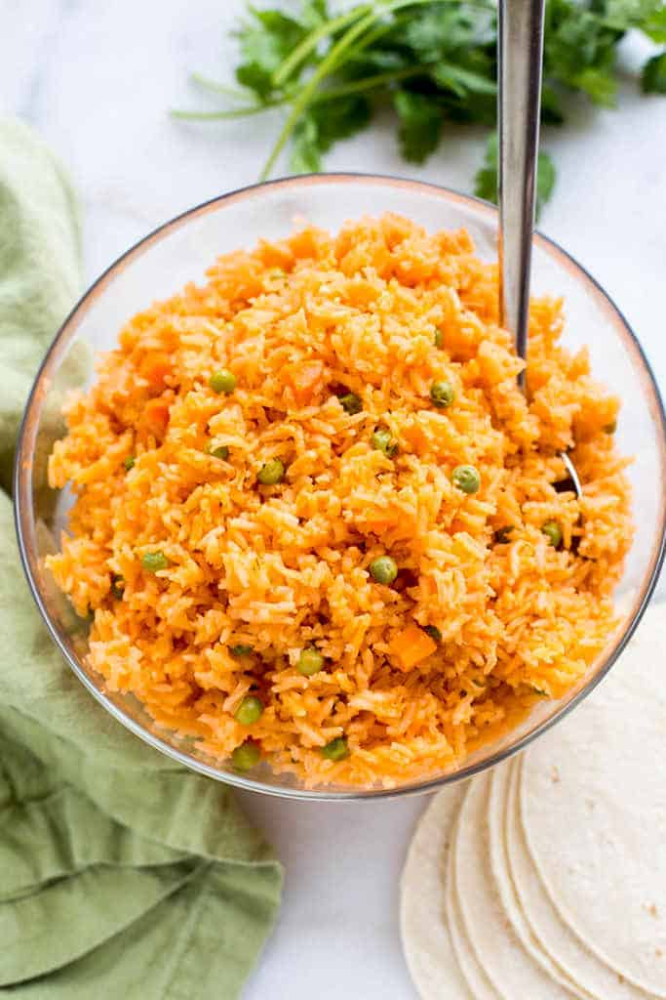

Mexican Rice

Description
The BEST, truly authentic Mexican Rice is so easy to make, and a necessary side dish for all of your favorite Mexican recipes.
Author: Lauren Allen from Tastes Better From Scratch
Ingredients
- Long Grain White Rice -- 1.5cups
- Vegetable or Canola Oil -- .25cups
- Garlic, minced -- 1tsp
- Medium Onion -- .25
- Tomato Sauce -- .25cups
- Tomato Bouillon -- 2tsp
- Salt -- .25tsp
- Carrot, diced -- 1
- Peas -- .5cups
- Water -- 3cups
- Serrano Peppers, optional -- 1-3 whole
Steps
- Rinse the rice in a fine mesh strainer until the water runs clear. Set aside.
- In a large saucepan over medium-high heat, add the oil. Once hot, add the rice and stir to combine. Cook over medium heat, stirring frequently, until the rice is lightly golden brown all over (about 10 minutes).
- Add tomato sauce, garlic, and diced onion to the pan. Stir. Add tomato bullion, salt, carrots, peas, and water (and serrano peppers, if using. They add a little flavor, but not spice.).
- Bring to a boil, then cover, reduce heat to low and cook for about 20 minutes or until the water is completely absorbed. Remove from heat and allow to rest for 5 minutes before fluffing with a fork.